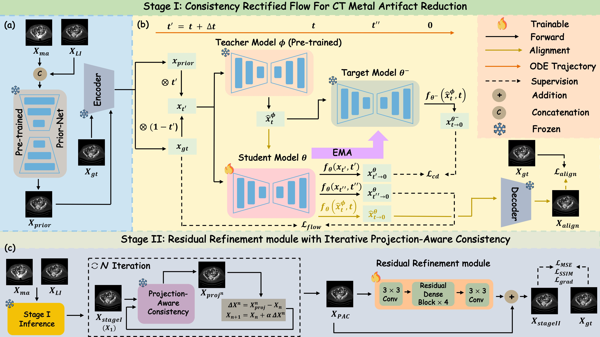
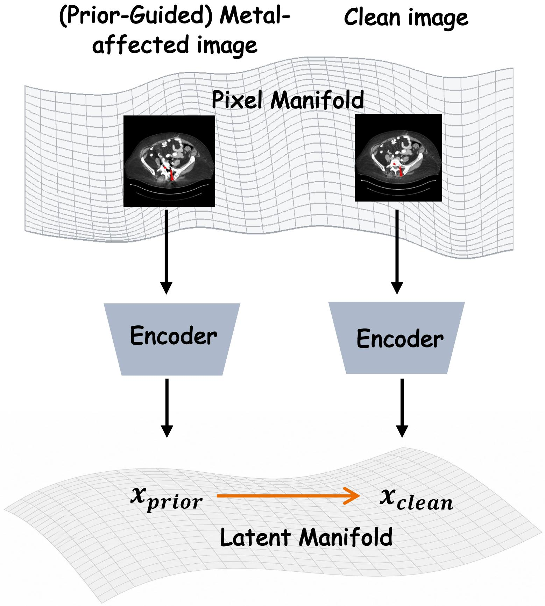
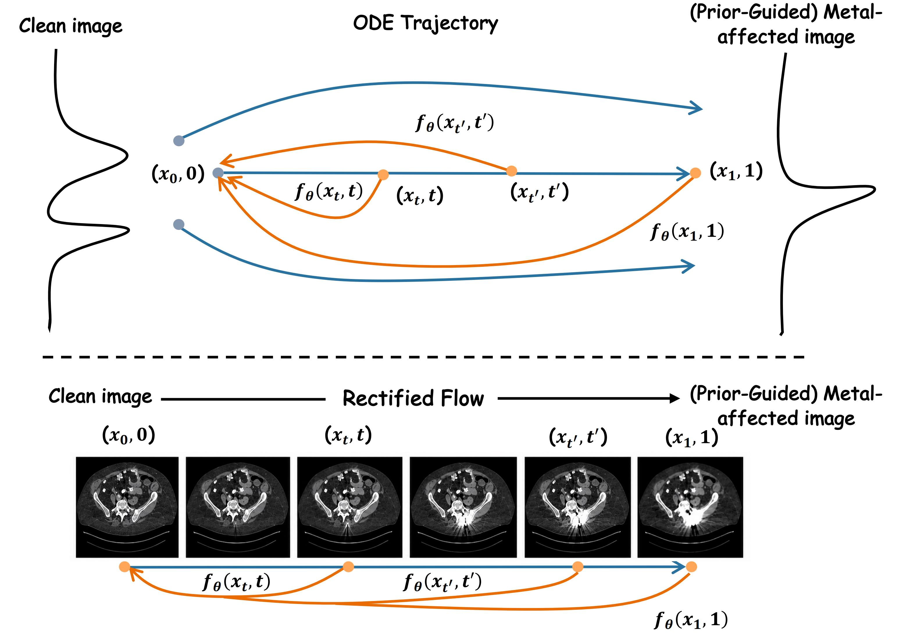
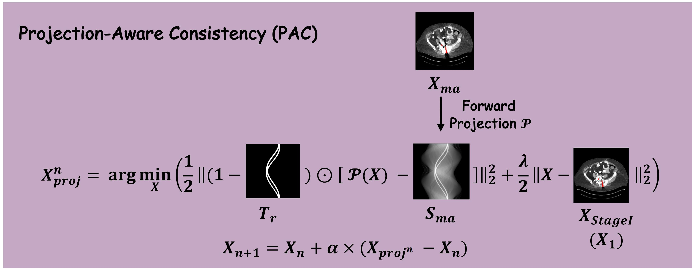
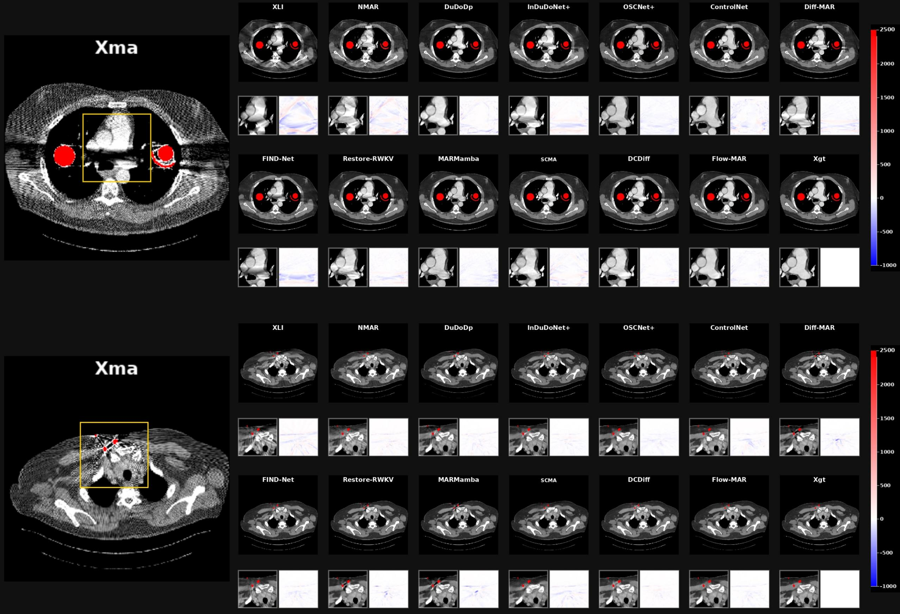
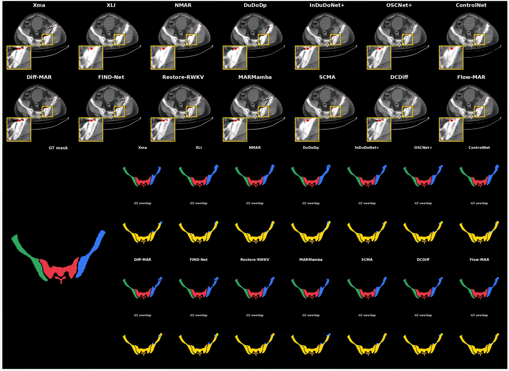
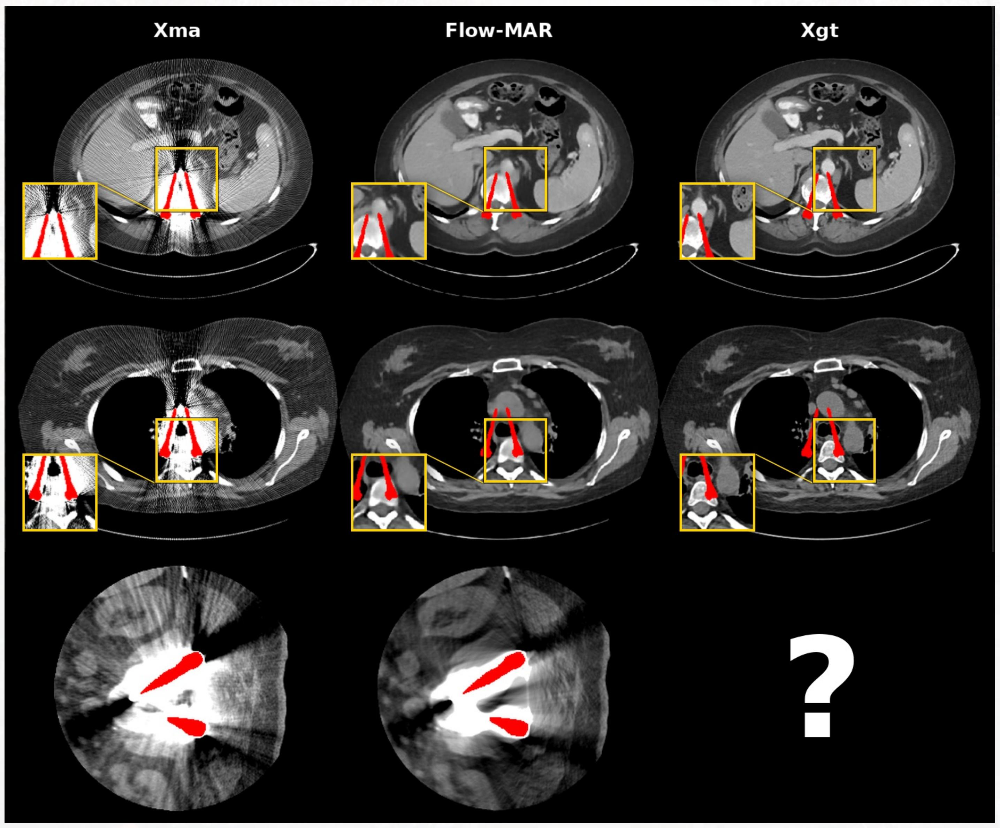
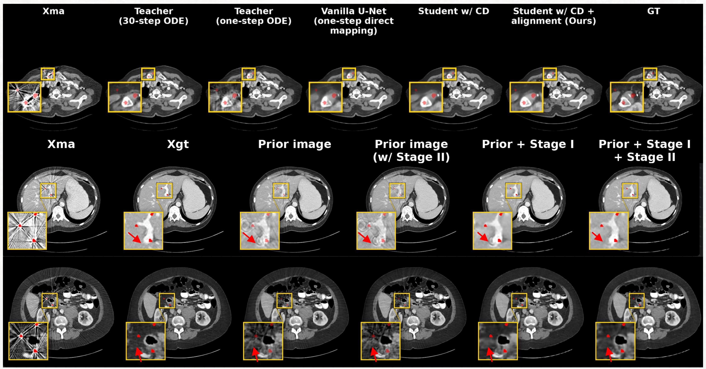

Computed tomography (CT) is widely used for clinical diagnosis, but metallic implants severely attenuate X-rays and corrupt projection data, producing streak and shading artifacts that degrade image quality and impede diagnosis. While diffusion models have demonstrated success in image restoration, existing diffusion-based metal artifact reduction (MAR) methods suffer from slow sampling from noise initialization or fail to preserve anatomical fidelity. We present Flow-MAR, a one-step consistency flow framework with projection-aware refinement. We model a rectified flow from prior-guided to clean images in latent space, avoiding high-dimensional diffusion training and easing few-step restoration from severely artifact-corrupted inputs. Consistency distillation with an image-space alignment loss enables faithful one-step generation, and a residual refinement module with iterative projection consistency improves measurement fidelity and detail recovery. Experiments show that Flow-MAR not only achieves meaningful improvements on simulated dataset but also demonstrates effectiveness on clinical scenarios and downstream tasks.

Flow-MAR decouples restoration into two stages: a prior-guided latent consistency flow that generates a plausible result in a single step, and a projection-aware refinement that anchors the reconstruction to real CT measurements.


Flow-MAR is evaluated on one simulated dataset and one clinical dataset covering different anatomies and artifact distributions. It suppresses artifacts most cleanly while preserving the sharpest anatomical boundaries.



We validate each key component of Flow-MAR through ablation studies on the simulated Syn-DeepLesion dataset. The ablations cover three aspects: (1) the restoration starting point, comparing Gaussian noise, the raw metal-affected image, and the learned structured prior; (2) the consistency distillation mechanism, comparing the 30-step teacher, one-step teacher, vanilla direct regression, and the consistency student with/without the image-space alignment loss; (3) the projection-aware residual refinement module, comparing Stage I only, the full two-stage pipeline, and applying Stage II directly to the prior image.

@article{chen2026flowmar,
title = {Flow-MAR: One-Step Consistency Flow with Projection-Aware Refinement for CT Metal Artifact Reduction},
author = {Chen, Zhanghao and Lei, Shenglin and Ge, Yuxiang and Zhang, Yikun and Ge, Rongjun and Chen, Yang},
note = {Under review},
year = {2026}
}